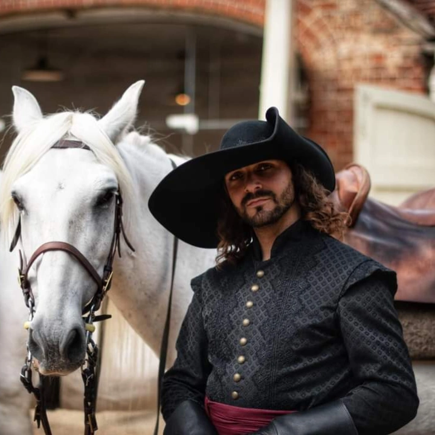

Académie Équestre
Les arts équestres en majesté

Les arts équestres en majesté
Apparues en France au XVIe siècle, puis démocratisées par le Roi de France Louis XIII, les académies équestres ont pour but de former aux arts du corps et de l'esprit par l'équitation, le maniement des armes, la danse et les arts intellectuels. Cette équitation est inscrite depuis 2011 au Patrimoine culturel immatériel de l'humanité et reflète le savoir des maîtres écuyers qui ont nourri cette grandeur reconnue dans le monde depuis plus de 400 ans.



Cette Académie a pour but de faire acquérir aux élèves un savoir unique. Il s'agit également d'instruire le sens du beau et d'approcher au plus près les connaissances séculaires du savoir-faire et savoir-être français. Les Arts Académiques sont enseignés par des instructeurs reconnus, dans une approche pédagogique technique, théorique et pratique se basant sur les connaissances historiques, pouvant laisser apparaître un aspect plus moderne de la discipline.
7 jours consécutifs -- 2 à 6 personnes -- 49 heures de leçons
Déroulé de la journée
Possibilité d'académie de 11 jours sur 2 semaines consécutives (sur devis). Déplacements France, Suisse et Belgique. Hors frais de déplacements, logements et repas des instructeurs. La structure d'accueil doit comporter un manège et/ou une carrière (minimum 20 x 40 m), une salle spacieuse avec sol dur pour la pratique de l'escrime et de la danse ainsi qu'un lieu de repas et de vie en intérieur.
10 mois -- septembre à juin -- 72 séances
Doubs. Instructions hors vacances scolaires ou possibilités si disponibilités. Les leçons débutent toutes par un échauffement physique.
Galop 5 Dressage en Basse École minimum. Le cheval doit posséder les compétences en adéquation avec le niveau demandé. Pas de niveau requis pour la danse et l'escrime.
L'académicien doit disposer de son propre cheval. Propreté irréprochable exigée pour le cheval, le matériel et l'académicien.
Selle de dressage, bridon ou bride, bottes (ni boots ni guêtres), gants, casque, chaussures de sport. Surfaix, longe et longues rênes pour la discipline à pied.
Amener également une selle de dressage à califourchon. La houssine est obligatoire.
Tenues pour la pratique des Arts offertes pour les académiciens. Elles doivent être portées lors des leçons et toujours propres. Bijoux proscrits, cheveux longs attachés.
Manège et/ou carrière (minimum 20 x 40 m), salle spacieuse avec sol dur pour l'escrime et la danse, lieu de repas et de vie en intérieur.
"Un savoir d'excellence et de noblesse. Instruire le sens du beau et approcher au plus près les connaissances séculaires du savoir-faire et savoir être Français."
Contactez Florian pour discuter de votre projet, de votre niveau et choisir la formule qui vous correspond.